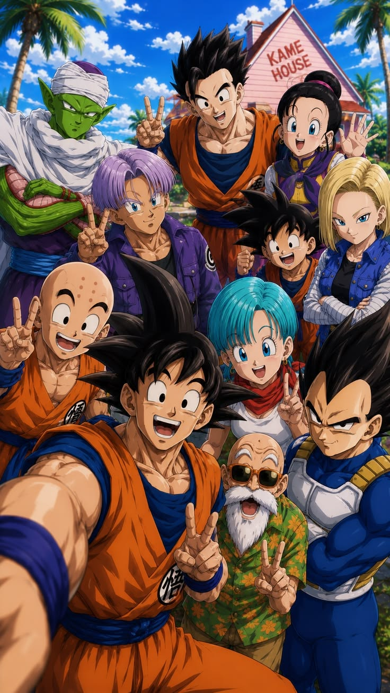
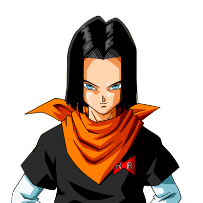
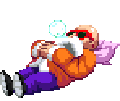
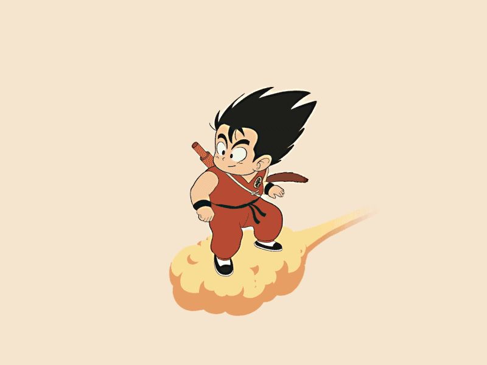
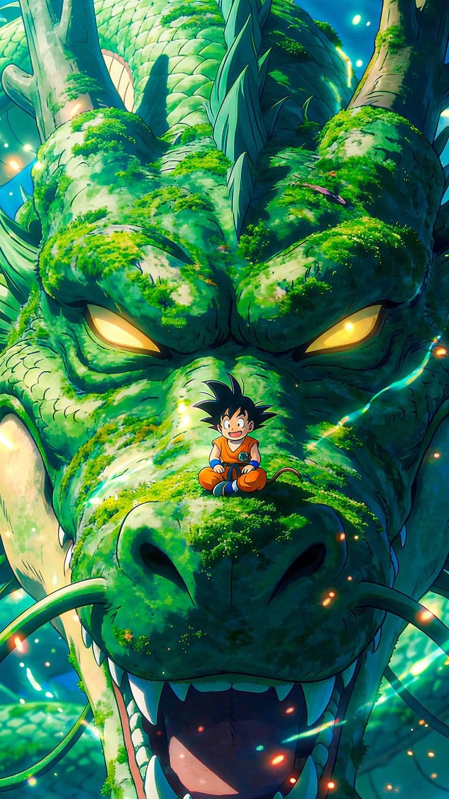
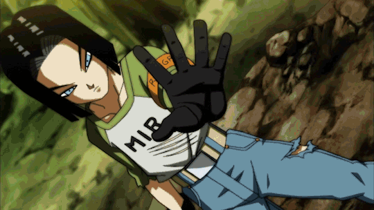
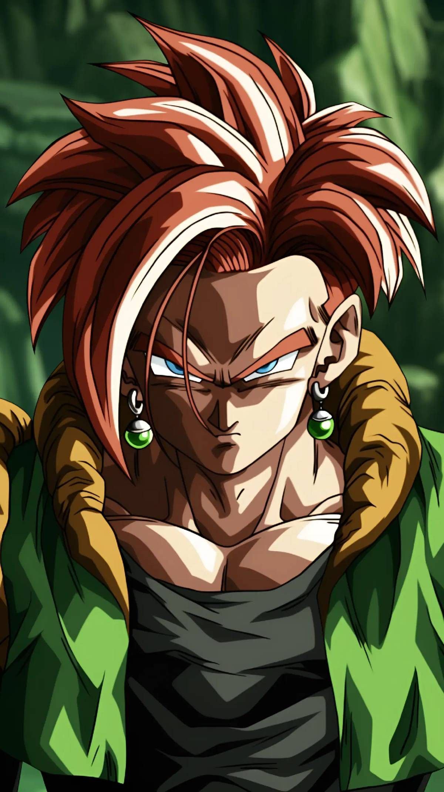
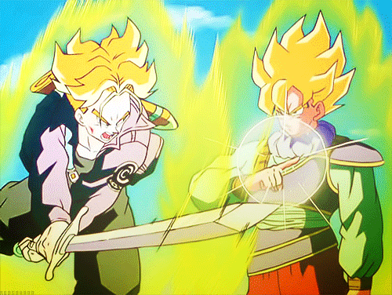
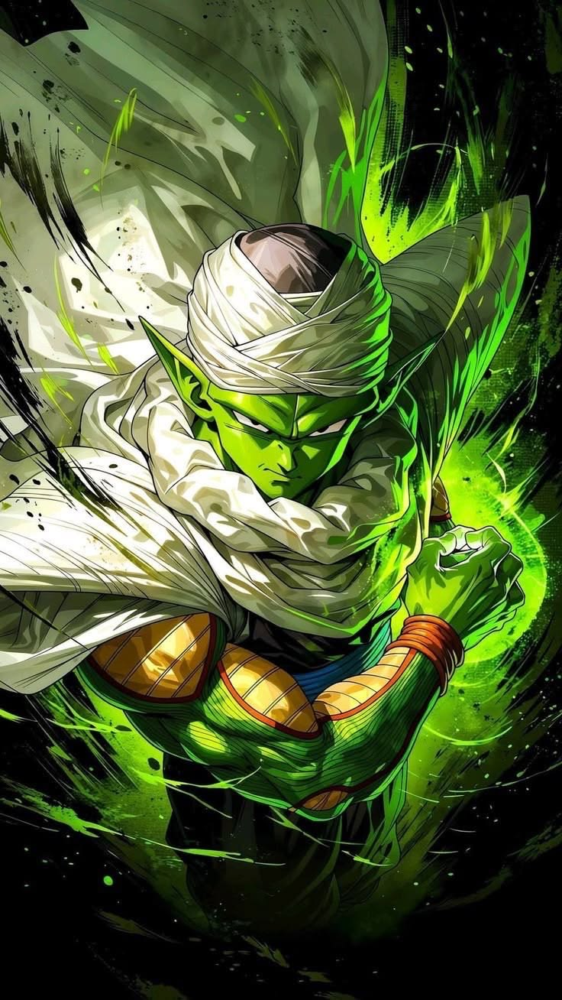

Mientras tanto... el equipo de heroes busca las 7 esferas del dragon.
Para poder traer de vuelta a Goku, y salvar al mundo del temible Friezer.
Las 7 esferas del dragon son lo mas difficil de obtener, especialmente
las del planeta Namek, pero su poder
El androide 17, se acerca con 16 y 19 para destruir. Trunks y Vegeta se
preparan para enfrentarlos, con su forma super sayayin. Buscaron ayuda
de Picolo y Ten Shin Han.
Que fusion serian necesarias para convatir estos villanos? Cuan importante
es esto para el futuro? Se necesita la maquina del tiempo.



